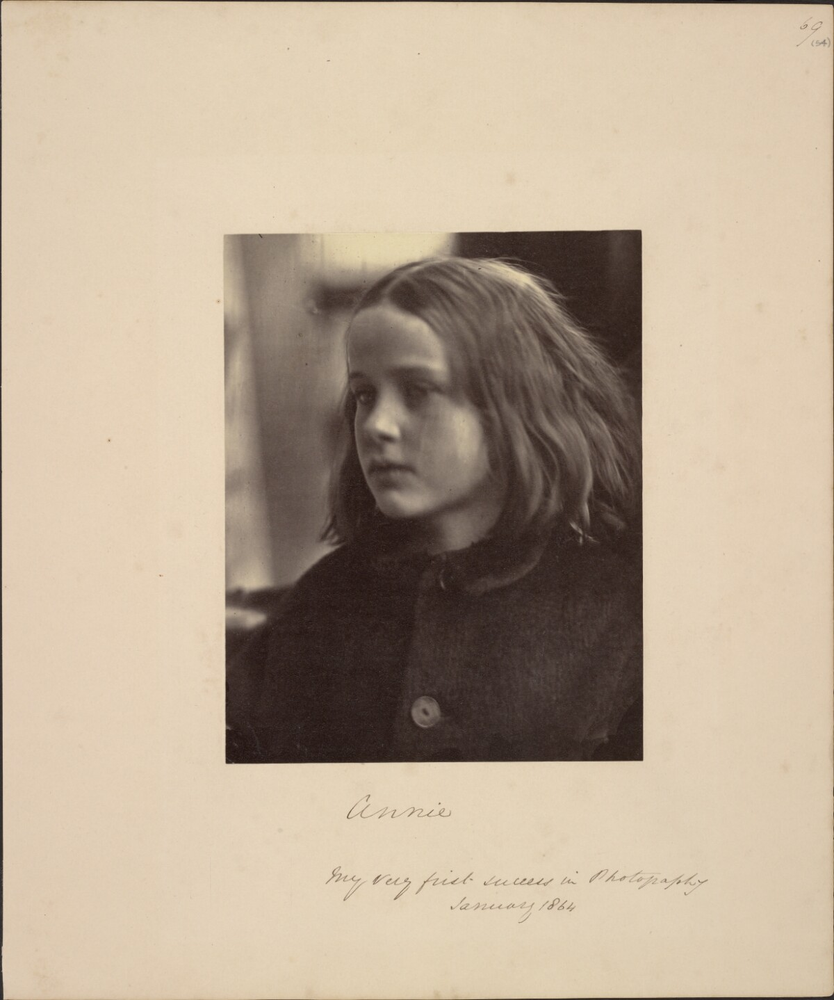

Sviluppi

Il fuoco giusto
Mio nonno mi fotografava da piccola, ed è lì che per me è cominciato tutto. Per il primo numero di Sviluppi, nell'anno in cui la fotografia compie duecento anni, ho scelto una donna che prese in mano la sua prima macchina a quarantotto anni e decise da sola quale fosse il fuoco giusto.
01 ▸ una fotografia, una storia
Annie, gennaio 1864

Al Getty Museum di Los Angeles c'è una stampa piccola, meno di diciotto centimetri, che si chiama semplicemente Annie ed è datata gennaio 1864. È il ritratto di una bambina: il viso esce dal buio come da un pozzo, tra luce e ombra c'è un contrasto forte, i contorni non sono netti e lo sfondo si scioglie. Un fotografo di allora l'avrebbe rifatta. Julia Margaret Cameron, invece, sul cartoncino scrisse che quello era il suo primo successo.
Aveva quarantotto anni. Era nata a Calcutta nel 1815, abitava a Freshwater, sull'isola di Wight, e poche settimane prima, a dicembre, la figlia e il genero le avevano regalato una macchina fotografica, perché si distraesse un po' nelle sue giornate solitarie. Un laboratorio non ce l'aveva, così se lo inventò: la carbonaia diventò la camera oscura, e un pollaio a vetri che aveva regalato ai figli diventò il suo studio di posa. È il dettaglio che amo di più di tutta questa storia: una delle avventure più alte della fotografia dell'Ottocento è cominciata dove prima stavano le galline.
Per circa tre settimane provò e sbagliò, al freddo di gennaio. Poi davanti all'obiettivo si sedette Annie Philpot, e qualcosa finalmente funzionò. Cameron ricorderà di essere stata presa da un «transport of delight», un rapimento di gioia, e di aver avuto l'impressione che la fotografia l'avesse fatta la bambina, non lei.
Veniva da un mondo pieno di pittori. Nel salotto della sorella Sara, a Little Holland House, a Londra, passavano gli artisti vicini ai Preraffaelliti, e con George Frederic Watts e Dante Gabriel Rossetti strinse amicizie che si leggono nelle sue immagini, negli stessi modelli e nelle stesse pose. Da quel mondo le veniva l'idea che una fotografia potesse stare accanto a un quadro, e non limitarsi a registrare.
Annie non è perfetta: è presente.
I critici non glielo perdonarono. Nel 1865 una rivista di fotografia le riconobbe un'audace originalità, ma pagata con tutte le altre qualità fotografiche; altri parlarono di stampe sporche e confuse. Lei lasciava graffi, striature, perfino impronte, e lo sfocato era una scelta, non un incidente. A Herschel, l'astronomo che le era amico da una vita, si racconta che chiese in una lettera chi avesse il diritto di stabilire quale fosse il fuoco legittimo.
Oggi le sue stampe sono nei grandi musei del mondo, e quella bambina con i contorni morbidi ci guarda ancora. Cameron lo capì in un pollaio, al freddo, a quarantotto anni. Al resto del mondo ci volle molto di più.
02 ▸ il mondo in tre righe
Il mondo in tre righe
Nan Goldin torna a Londra, e guarda gli animali
Dal 24 novembre al 7 marzo la Hayward Gallery ospita You Never Did Anything Wrong, la sua prima personale in un museo britannico dal 2002. Non è una retrospettiva: al centro c'è un film nuovo, fatto di vecchie immagini naturalistiche, su animali, terra ed estinzione. · The Art Newspaper
Una foglia batte tutti
Il Nature Photographer of the Year 2026 è il finlandese Hannu Ahonen: una foglia di ninfea accanto alla sua copia di ghiaccio, rimasta lì quando il ghiaccio è scivolato via. Su oltre 27.000 foto in gara, non capita spesso che vinca una pianta. · PetaPixel
Fotografiska raddoppia in Cina
Il museo di fotografia nato a Stoccolma ha aperto da poco una nuova sede a Shenzhen, 5.300 metri quadrati affacciati sulla baia: è la seconda in Cina dopo Shanghai, la quinta nel mondo. · The Art Newspaper
03 ▸ da scoprire
Joanna Piotrowska, Burrowed
mostra · firenze, palazzo strozzi · fino al 24 gennaio · ingresso gratuito
La fotografa polacca Joanna Piotrowska ha la sua prima personale in un'istituzione italiana: fotografie nuove e collage pensati per il Project Space di Palazzo Strozzi. Il suo terreno è la casa, il corpo, i legami di famiglia, e quella zona incerta in cui proteggere qualcuno può diventare trattenerlo.
Vale il viaggio perché, come Cameron centocinquant'anni fa, usa il ritratto non per mostrare com'è una persona, ma per farci sentire che cosa c'è tra due persone. Ed è gratis: una scusa perfetta per una giornata a Firenze tra Natale e l'Epifania.
04 ▸ dal mio rullino
Dal mio rullino
— ▸ fonti
- J. Paul Getty Museum, Annie (Open Content, CC0).
- Victoria and Albert Museum, scheda di Annie e introduzione a Julia Margaret Cameron.
- Victoria and Albert Museum, i metodi di lavoro di Cameron.
- Science Museum Group, Annie, My first Success.
- Tate, Painting with Light (2016).
- Southbank Centre, Nan Goldin, You Never Did Anything Wrong.